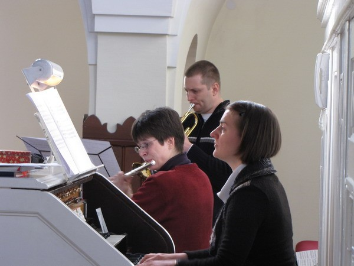
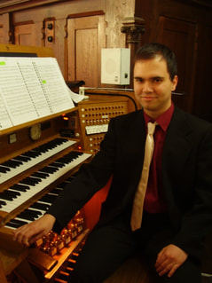

A Händel trió alapító tagjai:
Szabó Réka - fuvola
Vadernáné Szabó Katalin - orgona
Péterfia Tamás - trombita, piccolo trombita, szárnykürt
A trió 2008 őszén alakult. A kamaraegyüttes repertoárján elsősorban barokk és klasszikus művek szerepelnek.
A trió tagjai modern hangszereken játszanak.
Szabó Réka - fuvola
Vadernáné Szabó Katalin - orgona
Péterfia Tamás - trombita, piccolo trombita, szárnykürt
A trió 2008 őszén alakult. A kamaraegyüttes repertoárján elsősorban barokk és klasszikus művek szerepelnek.
A trió tagjai modern hangszereken játszanak.

A Händel trió számos koncertet adott Budapest különböző plébánia templomaiban,
valamint vidéken Pécsett és Zamárdiban.
Több alkalommal közreműködtek esküvőkön is. Felléptek már egyházi ünnepeken: játszottak a Városmajori Jézus Szíve Plébániatemplom búcsúján,
a pécsi Pálos Szerzetesrend támogatói számára adtak karácsonyi koncertet és a budapesti Jézus Szíve Jezsuita templom 105 éves évfordulóján ünnepi hangversennyel vettek részt.
Több alkalommal adtak adventi koncertet különböző templomokban.
Több alkalommal közreműködtek esküvőkön is. Felléptek már egyházi ünnepeken: játszottak a Városmajori Jézus Szíve Plébániatemplom búcsúján,
a pécsi Pálos Szerzetesrend támogatói számára adtak karácsonyi koncertet és a budapesti Jézus Szíve Jezsuita templom 105 éves évfordulóján ünnepi hangversennyel vettek részt.
Több alkalommal adtak adventi koncertet különböző templomokban.

Szabó Réka középiskolás éveit a kecskeméti Kodály Zoltán Zeneművészeti Szakközépiskolában töltötte,
Berényi Bea növendékeként. 1999-ben sikeres felvételi vizsgát tett a Liszt Ferenc Zeneművészeti
Egyetemre és Prőhle Henrik növendéke lett. 2005-ben diplomázott. 2006- tól 2008-ig Münchenben a
Hochschule für Musik und Theater-en folytatta tanulmányait Marianne Henkel professzor kezei alatt.
2008 júniusában diplomázott a mesterosztályban.
1997 márciusában I. díjat nyert a II. Országos Jeney Zoltán Ifjúsági Fuvolaversenyen Kaposváron. 1998 áprilisában rész vett a II. Nemzetközi Fuvoladuó és Kisegyüttes Versenyen Balassagyarmaton. Fuvoladuó kategóriában kiemelt nívódíjat, a fuvola kvartett kategóriában nagydíjat kapott. 2001 tavaszán első helyezést ért el a II. Hartai Ferenc Fuvolaversenyen Budapesten.
Tanulmányai alatt több alkalommal részt vett Marianne Henkel, Adorján András és Bálint János kurzusain. A historikus barokk előadásmóddal Csalog Benedek kurzusain ismerkedett meg. Müncheni tanulmányai alatt Michael Schmidt-Casdorff barokk fuvolaművésztől vett órákat.
Jelenleg a Dunakeszi Farkas Ferenc Művészeti Iskola fuvolatanára. Legkedvesebb zenetörténeti korszakai a barokk és a klasszika.
Legszívesebben tanítással és kamarazenéléssel foglalkozik.
1997 márciusában I. díjat nyert a II. Országos Jeney Zoltán Ifjúsági Fuvolaversenyen Kaposváron. 1998 áprilisában rész vett a II. Nemzetközi Fuvoladuó és Kisegyüttes Versenyen Balassagyarmaton. Fuvoladuó kategóriában kiemelt nívódíjat, a fuvola kvartett kategóriában nagydíjat kapott. 2001 tavaszán első helyezést ért el a II. Hartai Ferenc Fuvolaversenyen Budapesten.
Tanulmányai alatt több alkalommal részt vett Marianne Henkel, Adorján András és Bálint János kurzusain. A historikus barokk előadásmóddal Csalog Benedek kurzusain ismerkedett meg. Müncheni tanulmányai alatt Michael Schmidt-Casdorff barokk fuvolaművésztől vett órákat.
Jelenleg a Dunakeszi Farkas Ferenc Művészeti Iskola fuvolatanára. Legkedvesebb zenetörténeti korszakai a barokk és a klasszika.
Legszívesebben tanítással és kamarazenéléssel foglalkozik.
Péterfia Tamás klasszikus trombita tanulmányait a Bartók Béla Művészeti Iskolában végezte Antal Gábornál.
Később magánúton Csatos Ferenc trombitaművésznél órákat vett. Sokat köszönhet testvérének ifj. Péterfia Csaba harsonaművésznek,
akitől sokat tanult a rézfúvásról és a komolyzenéről már a kezdetektől. Jazz tanulmányait a Kőbányai Zenei
Stúdióban Fekete Kovács Kornélnál és Fekete Istvánnál végezte. 2010 augusztusában részt vett Eric Miyashiro
(jazz trombitás) trombita kurzusán.
Fél évet dolgozott egy japán luxushajón, mint szólótrombitás, majd négy éven át trombitált egy tíz tagú
kamarazenekarban (Musica Hungarica) Németországban. Itt egy lemezfelvétel is készült a közreműködésével.
Édesapja, Péterfia Csaba is trombitás, így szerette meg a hangszert és ennek hatására kezdett trombitán tanulni.
Élete legnagyobb élménye, hogy élőben hallhatta Maurice André trombitaművészt.
Vadernáné Szabó Katalin a Szent István Király Zeneművészeti Szakközépiskolában kezdte orgona
tanulmányait Peskó György orgonaművésznél. A Debreceni Egyetem Konzervatóriumában 2002-ben szerzett
orgonaművész -tanári és egyházzenész, majd két évre rá szolfézstanári diplomát. Orgona tanárai
Dr. Dobiné Dr. Jakab Hedvig és Dr. Karasszon Dezső voltak. 1998-ban a Győri Nemzetközi Orgonaverseny döntőse volt.
A Vikár Sándor Zeneiskolában, Nyíregyházán 5 évig tanított orgonát és szolfézst. Ezzel párhuzamosan a
Kölcsey Ferenc Református Tanítóképző Főiskola kántor szakán volt óraadó orgonatanár. 1998-2002 között
a Harmonia Instrumentalis fúvós régi zene együttesben continuozott csembalón és orgonán. Jelenleg Budapesten
a Bartók Béla Alapfokú Művészetoktatási Intézmény tanára.
Önálló koncertjei mellett sokszor kísért kórust, melyekből rádió, CD, illetve DVD felvételek is készültek:
Vox Antiqua Kamarakórus, Cantemus Vegyeskar, Pro Musica Leánykar, Canticum Novum Kamarakórus, Canto Armonico
Énekegyüttes, Hálaadás Kórus.
Élete nagy élménye volt, hogy 2005-ben Debrecenben Helmuth Rilling vezénylete alatt orgonálhatott J. S. Bach: János-passiójában.
A Concerto Filharmónia zenekarban rendszeresen orgonál. 2009-ben a
Gózon Gyula Kamaraszínházban adták elő Haendel: F-dúr orgonaversenyét.
Gózon Gyula Kamaraszínházban adták elő Haendel: F-dúr orgonaversenyét.

Gedai Ágoston öt éves kora óta tanul zenét. 2005-ben több éves zongoratanulás után kezdett el orgonát
tanulni a Szent István Király Zeneművészeti Szakközépiskolában, Deák László orgonaművész tanítványaként.
Édesapja, Gedai György a fóti Római Katolikus templom kántora, így az inspiráció jelentős részben neki köszönhető.
2015-ben diplomázott a Liszt Ferenc Zeneművészeti Egyetem orgonaművész mesterképzésén, melyet 2016-ban
a művésztanári diploma megszerzése követett. Tanárai: Ruppert István, Fassang László, Pálúr János és Szabó Balázs voltak.
2010 tavaszán harmadik helyezést ért el a Bartók Béla Zeneművészeti Szakközépiskolában rendezett
X. Országos Orgonaversenyen a 2. korcsoportban. 2012 nyarán megnyerte a Dél-Dunántúli Filharmónia által szervezett
Balatonboglári Közönségversenyt. 2013 őszén részt vett a Freibergben és Drezdában rendezett Silbermann Orgonaversenyen,
melyen bejutott a középdöntőbe.
Évente részt vett az orgonatanszakkal francia- és németországi tanulmányutakon, amelyen az európai orgonaépítészet
remekműveit ismerhette meg. Ezek a hangszerek óriási zenei élményt adtak számára. Játszott Christoph Bossert, Wolfgang Zerer,
Sietze de Wries, Stefan Engels budapesti mesterkurzusain.
2016 szeptemberétől a budapesti Ward Mária Általános Iskola, Gimnázium és Zenei Szakgimnázium zongoratanára és korrepetítora.
Egyházzenei szolgálatot is végez, több éve orgonál a Pesti Ferences Templomban és 2016 januárja óta a budapesti Páli Szent Vince Templom orgonistája.
Gedai Ágoston 2014 tavaszán csatlakozott a Händel trióhoz.
A trió repertoárján triószonáták, fuvolaszonáták, fuvolaversenyek, szóló fuvoladarabok, trombitaszonáták, trombitaversenyek, két trombitás kamaradarabok, trombita kíséretes áriák, klasszikus kamaradarabok és szóló orgonadarabok szerepelnek. A trió névadója Georg Friedrich Händel. A trió tagjai így fejezik ki tiszteletüket a komponista zenei nagysága előtt.
A trió repertoárján triószonáták, fuvolaszonáták, fuvolaversenyek, szóló fuvoladarabok, trombitaszonáták, trombitaversenyek, két trombitás kamaradarabok, trombita kíséretes áriák, klasszikus kamaradarabok és szóló orgonadarabok szerepelnek. A trió névadója Georg Friedrich Händel. A trió tagjai így fejezik ki tiszteletüket a komponista zenei nagysága előtt.